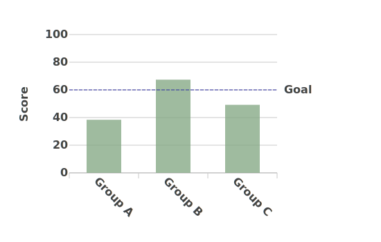
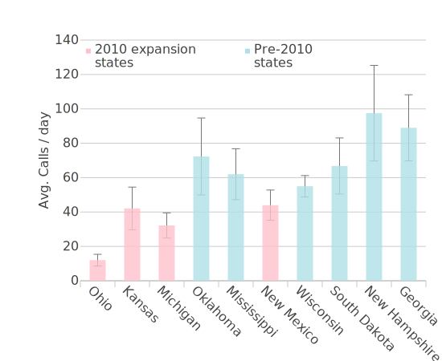
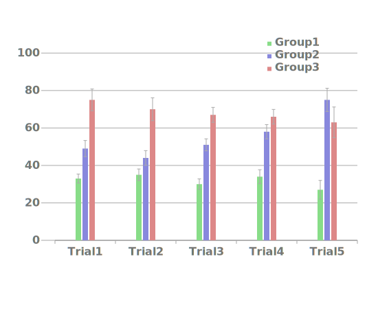
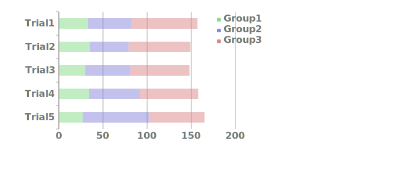
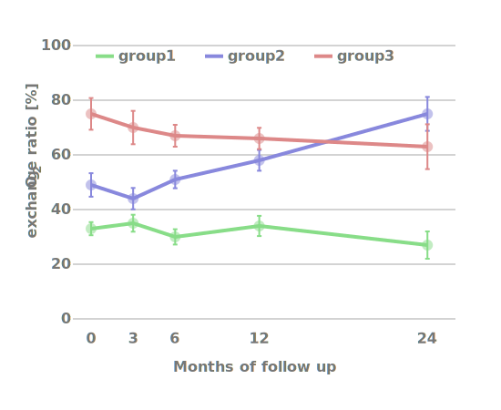
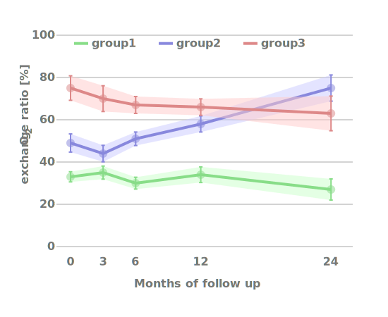
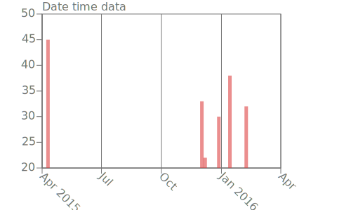
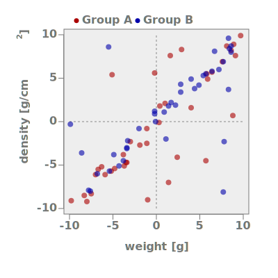
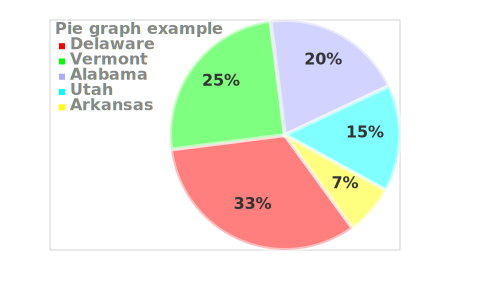
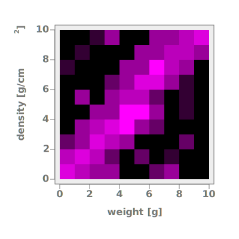

SVGdatashapes
SVGdatashapes.py is a compact set of python functions for creating many types of plots and data displays in SVG for use in web pages. General purpose, useful in areas such as biomedical, scientific, business, process monitoring, report generation. Plenty of control over legends, tooltips, colors, transparency, and many other appearance details. It has no package dependencies, and can work nicely in frameworks such as Flask and Bootstrap. No javascript, CSS, DOM, or SVG knowledge is required.
Download / Install
pip install svgdatashapes
Or if you prefer, you can just download directly and place into your python source directory:
svgdatashapes.py
svgdatashapes_dt.py (if you need date/time support)
Projects that require animations or high-end reactivity would need to use D3, Plotly, or similar; projects that require integrated statistics / computational ability should use something like Numpy or R + ggplot instead.
SVGdatahshapes renders its results in SVG. An SVG graphic is simply a block of xml code within an <svg> tag. All modern web browsers support viewing and printing of SVG graphics.
SVG is a good format for web-based data displays and line art because it's vector-based and has full support for good fonts, text in any direction, transparency, as well as tooltip and hyperlink support. SVG can share CSS styling from the host web page and can use the full range of html special characters to get Greek letters, etc. (SVGdatashapes also supports <sup> and <sub> for superscripts and subscripts).
You can include a chunk of SVG code directly into your html (referred to as an "inline SVG"). Or, you can put the SVG in a separate file and reference it using an <img> tag. (We do it both ways on this web site.) *
There are some differences between "inline" and "<img>":
If you use the "inline" method your SVG can be influenced by the host web page's CSS, you can use tooltips, and you can use HTML special character constructs such as Δ . On the minus side, you'll have a big blob of SVG code within your HTML web page.
If you use the <img> method you can use <img> width= and height= to conveniently adjust the size, and the SVG objects are cacheable. However, tooltips and HTML special characters won't work correctly and your SVG won't have access to the host web page's CSS (although it's possible to embed CSS class and style definitions into an SVG).
What about capturing SVG for import into Powerpoint and similar? Currently, this requires converting SVG to PNG. It's a little convoluted but this can be done using PhantomJS.
* There are some additional ways to incorporate SVG into web pages that we won't discuss here, such as <iframe> or <object>
A 'Hello world' example Click to view code

Bar graphs, error bars
|  |  |  |
Line plots and curves
|  |  |
Dates and times
|  |  |
|
Scatterplots  |
Pie charts  |
Heatmaps  |
More examples

Units and data spaces
Some terminology we use:
SVG units are used for positioning things within the SVG image. For example, you might use SVG units to specify the location of a legend and other labels. The origin (0, 0) is always in the lower-left corner. In a fixed-size SVG these units usually correspond to pixels at 100 per inch. Here's an illustration.
Plot area is the rectangular area where data can be plotted.
Data space is the plot area space expressed in the context of your data in X and Y. For example if you were plotting daily average temperatures, the data space might be 0 to 100 in Y (for degrees Fahrenheit) and the date range Jan 1 to Dec 31 2016 in X.
SVGdatashapes is driven by data coming from a database, a file, or anywhere else.
Your data should be organized as rows and columns, and should be put into a rectangular 2-D python structure such as an array of dict, an array of tuples, or an array of array. Typically you'll iterate through rows of data and do things using specific columns. To handle 1-D structures see vec2d().
These data types are supported: numeric data which are integers, floating point, or scientific notation values. categorical data which are tags or labels; dates are calendar dates, optionally with clock times appended [more info]. You can implement other coordinate systems by writing your own translation layer. In fact, that's how we implement date / time support.
Handling of missing or invalid data: Database NULLs usually end up in python as None. When None is encountered most of the API functions silently return False without rendering anything or raising an error. (The curvenext() and rectangle() functions differ from this a little). If an invalid piece of data other than None is encountered (such as a non-numeric value when numeric is expected, an unrecognized categorical term, a malformed date, or a zero-length item), the API functions will typically raise an error (class AppError).
Data column names: Some API functions take a column name parameter. If your data are an array of dict, then data columns are identified simply using the dict element name. Otherwise data columns are identified using an integer which is the column's array position within the row, and you may want to write your code so that you reference columns by name using your own array of names and .index().
To control the size, font, color, transparency and direction of text use settext(). To control the color, thickness, and any dashing of lines use setline().
Colors are specified in the usual way for example #afa is light green; #aaa is a light shade of gray. There are also some named colors that SVG recognizes.
Opacity is a value ranging from 0.0 (totally transparent) to 1.0 (completely opaque).
When rendering text you can use these constructs within the text string: \n to embed newlines in text, and eg. <sup>2</sup> or <sub>2</sub> to get superscripts or subscripts. HTML special character constructs such as µ (µ) can be used if you're doing inline SVG.
CSS: text and lines can often be CSS-styled using the css= and/or style= arguments. To style sets of elements together, see groupbegin() below.
SVGdatashapes API
Mandatory args are shown within the function templates and indicated as such. All args are keyword args unless otherwise indicated.
• svgbegin begin a new SVG graphic
svgbegin( width, height )
In most cases you'll start with svgbegin() and end with svgresult(). In more elaborate applications svgbegin() and svgend() can be used multiple times.
This function must be called before any other API function that produces graphical content or sets X or Y space.
width= and height= Mandatory. Integers that specify the SVG's size, aspect ratio, and the SVG units. X will range from 0 to width, and Y from 0 to height with origin in the lower-left corner. To create a fixed-size SVG the above is all you need, and width and height map to screen pixels. To create a dynamically-sized SVG use fluidsize=True and your SVG will be sized relative to the containing <div> and width, height will influence the aspect ratio.
fluidsize=True optional; create an SVG that's sized relative to its containing <div> . This works for inline SVG; you'll also need to specify browser=
bgcolor=color optional; shade entire SVG with this color initially.
testgrid=True optional; render a test grid showing SVG units.
notag=True optional; suppress the opening <svg> tag, in case you want to generate your own. If you do, the width and height you give in your svg tag must match svgbegin's width and height args.
browser= optional; only needed with fluidsize=True and is necessary due to browser's implementing SVG dynamic sizing differently. It indicates the user's browser type, one of firefox, chrome, safari, or msie. In flask you can use request.user_agent.browser to get this.
findrange( testval )
Find the min and max of one or more columns of numeric data. To use this, iterate over your data rows, calling findrange() with a data value (or sum of values) from the row. At the end call it once more with finished=True to return the results. It's set up this way to be flexibile enough to get correct axis min max when presenting stacked or clustered bars, ± error bars, showing several curves together, or plotting cumulative values. In addition to actual datamin and datamax, padded axmin and axmax are also supplied to support axis rendering. Here's an example:
import svgdatashapes as s
for row in dataset:
s.findrange( testval=row["avg"] )
result = s.findrange( finish=True )
print str(result.axmin), str(result.axmax)
The result is a tuple that can be passed directly to
xspace or yspace
via the datarange parameter.
The result tuple has these members:
axmin and axmax ... the adjusted min and max for axis rendering purposes
datamin and datamax ... the actual raw data min and max
testval= Mandatory except when finish=True A numeric data value to test for min and/or max.
erramt= optional; an error bar value in data units. This will be added to val in finding maxima, and deducted from val for finding minima.
finish=True Mandatory on last call. Compute and return the result.
nearest= and addlpad= optional; can be specified along with finish=True to help get a clean boundary for the axis min and max. For example if you had data ranging from 17 to 62 findrange() would normally determine the axis range to be from 15 to 65 with stubs every 5. To get stubs (etc) every 10 you could specify nearest=10. For automated situations where data magnitude varies you can use eg. addlpad=1 or addlpad=2 to get additional padding at the ends that's proportional to your data range.
See also columninfo() which can compute distributions and quartiles.
uniqcats( )
Get a unique list of categories from a column of categorical data. This can be passed directly to xspace or yspace via the catlist parameter.datarows= Mandatory. Your 2-D data structure. (If you have a 1-D vector you can use vec2d() to convert it.)
column= Mandatory. Identifies the data column to be characterizaed. Either a dict element name, or an integer (array index).
handlenulls= optional. Specify how category value of None (or zero-length) are to be handled. One of ignore, keep or spacers. Default is ignore; keep causes one null instance to be retained; spacers causes all null instances to be retained as a way of adding spacing within the categorical axis.
See also columninfo() which can compute categorical distributions.
columninfo( datarows, columnname )
Sometimes you may want to characterize a numeric data column more thoroughly than is possible with findrange().
Or, you may wish to run frequency distributions on a numeric or categorical data column.
Or, if you're doing boxplots you may need to compute percentiles on a numeric data column.
This function does those things. It returns a tuple of characteristics for the specified data column.
For numeric data columns, results are returned as a namedtuple having these members:
min and max ... the min and max observations
mean ... the average
nvals ... number of valid observations
sd ... standard deviation
sem ... standard error of measurement
nbad ... number of missing or non-numeric observations
sum ... the sum of all observations
allint ... True if all valid data are int
numsorted ... True if all data are numeric sorted
distribution ... optional distribution dict (see below)
distbinsize ... the binsize used in the above
percentiles ... optional percentiles dict (see below)
For categorical data columns, only distribution is supported, and categorical=True must be specified.
datarows= Mandatory. Your 2-D data structure. (If you have a 1-D vector you can use vec2d() to convert it.)
numcol= Mandatory. Identifies the numeric data column to be characterized. Either a dict element name or an integer array index.
categorical=True If specified the data column contains categorical data and only a frequency distribution will be produced (implies distrib=True).
distrib=True optional; if specified, compute a frequency distribution on the examined data column and provide it in the distribution member of the result. For numeric data columns an array of namedtuple each having members binlo binmid accum is returned, and a reasonable default numeric binsize (inc/2) is determined (it can be overridden using distbinsize=, see below). The result can be plotted as a histogram.
distbinsize= optional; may be used with distrib=True on numeric data columns, to explicitly control a frequency distribution's binsize. It may be a number eg. distbinsize=10 which sets the binsize explicitly, or it may be a construct such as distbinsize='inc/4' which sets the the binsize to the tic increment (which was computed on-the-fly earlier) divided by 4.
accumcol= optional; if specified with distrib=True this identifies a data column holding numeric values to be accumulated. If None instances will just be counted incrementally. Default is None.
percentiles=True optional; if specified, compute the 5th, 25th, 50th (median), 75th, and 95th percentile for the examined numeric data column and put them in the percentiles member of the result (a namedtuple with members p5 p25 median p75 p95). The examined data column must already be sorted numerically from low to high. The usual use for these percentiles data is to generate box plots
• settext set text point size, font, color, style, alignment
settext( )
Set the current properties to be applied to subsequent text rendering. Each property corresponds with an argument below. Individual properties remain in effect until explicitly updated or reset All args are optional; specify one or several.
ptsize= text point size. Integer. Default is 10. It's best to set ptsize= this way rather than CSS, for correct internal layout computations.
color= text color. Default is '#000' (black).
opacity= text opacity. Default is 1.0 (opaque).
anchor= text alignment. Use 'start' for left-adjusted text; 'middle' for centered text; 'end' for right-adjusted text. Default is 'start'
rotate= text rotation (degrees clockwise). rotate=0 gives ordinary horizontal text. Usually a value from 0 to 90, or 0 to -90. Default is None
style= a CSS style specification for the text. Default is None.
css= a CSS class name to style the text. Default is None.
adjust= allows finetune adjustments to future text positions. Specify as a 2-member list of (x, y) in SVG units. Default is None.
reset=True reset to use all of the defaults. Can be combined with any other args.
setline( )
Set the current properties to be applied to subsequent line rendering. Each property corresponds with an argument below. Individual properties remain in effect until explicitly updated or reset. All args are optional; specify one or several.
width= line stroke width. Default is 1.0.
color= line stroke color. Default is "#000" (black).
opacity= line opacity. Default is 1.0 (opaque).
dash= dash pattern. Example: dash='5,2'. Default is None for solid line.
style= a CSS style specification for the line. Default is None.
css= a CSS class name to style the line. Default is None.
reset=True reset to use all of the defaults. Can be combined with any other args.
• xspace, yspace set up a data space in X or Y
xspace( svgrange )
yspace( svgrange )
Set up data space and scaling in either X or Y. If datarange= parameter is present the space will use numeric scaling. Otherwise if catlist= parameter is present the space will use categorical scaling.
svgrange= Mandatory. A tuple of two values indicating location of the data space in SVG units.
Both values should be within the SVG's size as defined in svgbegin().
Example: (100,450)
For xspace the two values would indicate left edge and right edge of the new plot area.
For yspace the two values would indicate bottom edge and top edge of the new plot area.
datarange= A tuple of two values indicating axis min and max, in data units. You can simply pass findrange() return value, if you used it. If this parameter is present it means the space will use numeric scaling.
catlist= A unique list of categories. You can simply pass uniqcats() return value, if you used it. If this parameter is present it means the space will use categorical scaling. It also means that the function will return a structure that can be iterated over to do multipanel displays.
reverse=True optional; if specified the axis will use high-to-low data scaling, opposite of usual.
log=True optional; set up logarithmic scaling. You can also specify log='log+1'
allint=True optional; indicates that the all data are integer to avoid odd-looking fractional scale increments.xaxis( )
yaxis( )
Render an X axis or a Y axis for the currently defined plot area. The axis can have a line, tic marks, and scaling labels (stubs). Grid lines can also be rendered. Behavior is numeric or categorical (depending on how the data space was set up).
axisline=True optional; draw an axis line using current line properties. Default is True
loc= optional; controls the axis position. For example to render a Y axis at the right side of the plot area use loc='right'. For example to render an X axis at the top of the plot area use loc='top'. To render a Y axis 30 SVG units to the left of the plot area's left side use loc='left-30'. Default is bottom for X axis and left for Y axis.
tics= optional integer; draw tic marks to this length in SVG units using current line properties. Positive values give tics that run outward from the plotting area; negative values give tics that run inward. Default is None.
grid=True optional; draw grid lines using current line properties. Default is False
inc= optional; if specified as a number, tics and stubs will be rendered using this increment. Applies to numeric space only.
stubs= optional; if True render axis scale labels (stubs), using current text properties. With numeric scaling incremental numeric stubs are displayed. With categorical scaling the category terms are displayed. Set to False to not render any stubs. Default is True.
stubrotate= optional; a value in degrees clockwise to rotate stub texts. Default is None which means 0 degrees except 45 degrees when longer X axis stubs are detected. Use stubrotate=0 for no rotation.
stubformat= optional; a "printf-style" formatting string. With numeric scaling the default is '%g' and you can specify other formats such as '%.4f' to control the numeric format. For text stubs the default is '%s' and you can specify other formats such as '%.10s' to truncate to ten characters.
stublist= optional; defines irregularly placed numeric stubs. Given as a list of pairs: the left member of each pair is a numeric value and the right member of each pair is a label. If specified then stubs and perhaps grid lines will be rendered only the given numeric locations using the given labels. Does not apply to categorical scaling.
stubcull= optional; any stubs closer together than this distance will be omitted. An integer SVG units value. Mostly useful with log scaling. Default is None.
divideby= optional; a numeric value to have the displayed stubs be the underlying data value divided by this value (usually a power of 10). E.g. with high-magnitude data you might use divideby=1000; for very small magnitude data you might use divideby=0.001.
plotdeco( )
After a plot area is set up, use this to do things like render a title at the top, render labels beside or below the plot area, outline or shade the plot area. Call either before or after axes are rendered, whichever gives best results. The text items use current text properties, and the outline uses current line properties. All args are optional, specify one or several.
title= a title to appear directly above the top of the plot area.
xlabel= a label associated with the bottom of the plot area.
ylabel= a vertical label associated with the plot area's left side.
y2label= a vertical label associated with the plot area's right side.
outline= if True the plot area will be outlined using current line properties.
shade= a color to shade the entire plot area e.g. shade='#aaa'.
opacity= opacity for shade=. Default is 1.0.
titlepos= title's position with respect to the plot area. One of 'left', 'center', or 'right'. Default is 'left'.
xlabeladj= specify an (x, y) adjustment of the xlabel, in SVG units. eg. xlabeladj=(0,-20) adjusts the xlabel downward from its default position. Default is None.
ylabeladj= specify an (x, y) adjustment of the ylabel, in SVG units. eg. ylabeladj=(-20,0) adjusts the ylabel leftward from its default position. Default is None.
y2labeladj= same as ylabeladj but for the y2label, eg. ylabeladj=(20,0) adjusts the y2label rightward.
rectadj= allows fine tuning (stretching) the size of outline= or shade=. If specified as an integer it will be an amount of extra margin to add on all 4 sides, eg. rectmargin=8. Or, if specified as a 4 member tuple (left, bottom, right, top) the amount of adjustment can be controlled individually for each of the 4 sides eg. rectmargin=(-20,-10,20,10). All values are SVG units.
Note, if you're doing a tooltip it will be associated with the first-rendered title or label only.
bar( x, y )
Render a column bar.
x= Mandatory. Bar will be centered on this location in X data space.
y= Mandatory. "Top" of bar will be at this location in Y data space.
width= optional; bar width. An integer SVG units value. Default is 8.
ybase= optional; location of the "bottom" or "base" of the bar in data space. Default is the bottom of the plotting area. Typical use is to specify ybase=0 to show negative values with downward bars and positive values with upward bars.
color= optional; bar color. Default is light green. color=None is ok.
opacity= optional; opacity of the bar fill. Default is 1.0 (opaque).
outline=True optional; outline the bar using current line properties.
adjust= optional; adjusts bar's position by this numeric distance rightward in SVG units. Supply a negative value to adjust leftward. Useful with a categorical axis for rendering pairs, triples (etc) of bars.
horiz=True optional; render a horizontal bar instead of a vertical one. (But supply all the other bar() args as if doing a vertical one).
errorbar( x, y, erramt )
...or...
errorbar( x, ymin, ymax )
Render an error bar using the current line properties. If erramt= is specified a symmetrical error bar is rendered around x, y. Otherwise if ymin= and ymax= are specified the bar min and max are controlled explicitly (and y= is not specified).
x= Mandatory. Error bar will be centered on this location in X data space.
y= Y data location of underlying data point. Required except when ymin and ymax are being used.
erramt= Usually required. The SD, SEM or other error statistic. It will be rendered symetrically upward and downward. Required except when ymin and ymax are being used.
ymin= and ymax optional; may be specified to explicitly control where top and bottom of bar will be located, to produce assymetric error bars, hi-lo bars and similar.
tailsize= optional; integer SVG units value to control the length of the little tails at each end. Default is 5
adjust= optional; has similar purpose as with bar() above.
horiz=True optional; has similar purpose as with bar() above.
datapoint( x, y )
Render a round data point symbol. Typical use is in scatterplots.
Automatic clustering of duplicate data points is available, see clustermode()
x= and y= Mandatory. Location in data space where data point will be renderd.
diameter= optional; diameter of the circle in SVG units. Default is 5.
color= optional; data point fill color. Default is None
opacity= optional; opacity of the fill. Default is 1.0 (opaque).
outline=True optional; outline the data point using current line properties.
xadjust= optional; adjust location of data point in X by this distance in SVG units; sometimes useful with categorical scaling.
yadjust= optional; same as above but for Y.
setclustering( )
Enable datapoint() to slightly offset duplicate or near-duplicate data points to convey the degree of duplicity. Also can be used to do simple frequency distributions or beeswarms (data must be sorted on x, y for this to work). All args are optional, specify one or several.
mode= specifies the cluster placement method. One of 'surround', 'rightward', 'left+right', 'upward' or None. This controls where cluster members will be placed relative to the home data point. Default is None which turns off clustering.
offset= a numeric SVG units value indicating the distance that duplicate data points will be offset, in SVG units. Default is 0.8
tolerance= numeric value that indicates how close (in SVG units) two data points must be in order to be considered the "same" for clustering purposes. Default is 0.0
dampen= an integer value that can be set to > 1 when there are a lot of duplicates such that clustering is overwhelmed. For example, with dampen=3 three duplicates encountered in the data will be counted as one for clustering purposes. Default is 1.
To render a lineplot or filled band, start by calling curvebegin(). Then iterate over
your data rows and for each row call curvenext(). Uses current line properties.
curvebegin( )
curvebegin( )Sets up to begin a lineplot or filled band.
fill= optional; fill the area under the curve (or the area within the band if band=True) with this color.
opacity= optional; opacity of the fill. Default is 1.0 (opaque).
onbadval= optional; controls the behavior when an unplottable or None value is encountered. It can be specified as 'gap' which causes the line or band show a gap to indicate missing data. Default is 'bridge' which causes the line to bridge the gap.
band=True optional; if specified a filled band will be rendered rather than a lineplot. The bottom of the band will be controlled by y2 in curvenext().
stairs=True optional; render a stairstep curve. The stairstep will end on a vertical; you'll need to append an additional data row to get a horizontal tail end. This option cannot be used with fill or band.
adjust= optional; has similar purpose as with bar() above, sometimes useful with categorical axis.
curvenext( x, y )
Called for every data point to be plotted, including the first one.
x= and y= Mandatory. Location in data space where the curve will go next.
y2= optional; if specified a filled band is rendered with the top at y and the bottom at y2.
label= optional; render a label near the end of the curve using current text properties.
pieslice( pctval, startval, fill )
This function renders one piegraph slice. It is called several times in succession to build a complete pie graph.
Rendering a pie graph requires a plotting area for placement and sizing of the pie (but no datarange is necessary). A legend is usually needed with piegraphs; there's no direct slice labelling.
pctval= Mandatory. The size of the slice. A percentage value expressed as a number between 0.0 and 1.0
startval= Mandatory. Where the slice "starts" in radial space, and is a number between 0.0 and 1.0. See the example for usage pattern.
color= optional; fill the pie slice with this color.
opacity= optional; opacity of the fill. Default is 1.0.
outline= optional; if True outline the pie slice using current line properties. A nice effect is to use a fat white line for the outline; this gives separation to the slices.
placement= optional; placement of the entire pie relative to plotting area. Either left or right. Default is right.
showpct= optional; if True the slice's percentage value is shown as a label using current text properties. Can also be specified as a printf format eg. %0.1f. Default is False.
rectangle( x, y )
Render a rectangle or square of a certain color. Used to create heatmaps or to highlight a particular category or region in the display. The rectangle is positioned and sized using various combinations of x=, y=, width= and height= and perhaps adjust=, and exactly how depends on what you're doing and your scale types (numeric or categorical). See the examples for clarification. This function is oriented to data units; to render rectangles in SVG units see the low-level function rect().
x= X location of rectangle's center in data units.
y= Y location of rectangle's center in data units.
width= and height= control the size of the rectangle, in data units. If your X and Y space are both numeric, width and height are both required. If X is categorical and Y is numeric, just specify height (height='all' is allowed). If X is numeric and Y is categorical, just specify width (width='all' is allowed). If both axes are categorical neither height nor width should be specified.
adjust= optional; fine tune the rectangle's size. If specified as one integer it will be a margin amount added on all 4 sides, eg. adjust=8. Or, if specified as a 4 member tuple (left, bottom, right, top) the amount of adjustment can be controlled individually for each side eg. adjust=(-20,-10,20,10). All values are SVG units.
color= optional; shading of rectangle. Default is light green.
opacity= optional; opacity of the fill. Default is 1.0 (opaque).
outline=True optional; outline using current line properties. Default is False
label( text )
Render some text at a specific location using the current text properties. Uses include general labeling as well as creation of a scatterplot-like display with text as the data point symbol. Location can be specified in data units, or SVG units, or a combination of the two.
text= Mandatory. The text to be rendered.
x= and y= optional; a location in data space.
xdjust= optional; integer value in SVG units. If data location x= is supplied this adjusts the label's x= location. Otherwise this specifies the label's absolute x location. Default is 0.
ydjust= optional; same as above but for Y. Default is 0.
anchor= optional; text alignment, one of 'start', 'middle', or 'end'. Default is 'start'
line( x1, y1, x2, y2 )
Draw a line in data space between x1, y1 and x2, y2 using the current line properties. Typical use is for threshold lines and other annotation.
x1= and y1= Mandatory. Where the line begins.
x2= and y2= Mandatory. Where the line ends.
x1 and x2 may be specified as 'min' or 'max' to get the X minima or maxima respectively. Similarly x2 and y2 may be specified as 'min' or 'max' to get the Y minima or maxima respectively.
arrow( x1, y1, x2, y2 )
Draw an arrow in data space starting at x1, y1 with the arrowhead at x2, y2. Typical use is for annotation or vector plots such as weather windbarbs.
x1= and y1= Mandatory. Location of the non-tip end.
x2= and y2= Location of the arrowhead tip. Mandatory except when direction= and magnitude= are being used.
direction= and magnitude= Allow location of arrowhead tip to be determined by direction= in degrees (0 is straight up) and magnitude= a distance in SVG units. If these are used then don't specify x2 and y2.
headlen= optional; length of one side of the arrowhead in SVG units. Default is 18.
headwid= optional; a theta value controlling stoutness of the arrowhead. Default is 0.3
tiptype= optional; the type of arrowhead tip to render. Default is 'solid'. Other options include 'lines' and 'barb'.
tipcolor= opacity= optional; for solid arrowhead tips this controls the color and opacity. Defaults are #888 and 1.0
tooltip()
Enable a tooltip and/or a clickthru hyperlink using the bounding box of whatever plot element is rendered next. (A tooltip is a text box that appears when the user hovers their mouse pointer over a specific element.)
Plot element functions that support tooltips / clickthru are: bar(), datapoint(), label(), rectangle(), pieslice(), legenditem(), plotdeco(), and xaxis() / yaxis(). You call tooltip() once for each desired tooltip, usually within the loop where you're iterating over your data, just before drawing the object that the tooltip will be associated with. The tooltip settings do not persist after the associated plot element is rendered.
All args are optional, specify one or several.
title= the text to appear for ordinary tooltips. Also used with bs_popovers, see below.
url= an xlink hyperlink to this url will be generated, allowing user to click thru.
target= may be specified with url to open it in a new or different window. For example, target='_blank'
bs_popover=True if specified render a bootstrap popover tooltip instead of an ordinary tooltip. title will be the text in the top part of the tooltip, and content will be the bottom text. You must be using Bootstrap and include a javascript snippet as described in the Bootstrap popover documentation.
content= used with bs_popover=True, see above.
legenditem( sample, label )
Call legenditem() for each legend entry you wish to show. Then when ready to render the legend, call legendrender().label= Mandatory. The text that will appear for this legend entry.
sample= optional; type of sample for this legend entry. One of 'square', 'circle', or 'line'. If 'line' the current line properties will be used; otherwise color= must be specified. Default is 'square'
width= optional; controls the entry's displayed width in SVG units.
color= required for shape='circle' and shape='square'. ignored for shape='line'
outline=True optional; outline the circle or square using the line properties in effect when the legend is rendered.
legendrender( )
Render a legend, made up of all currently posted legend entries. Labels are rendered using current text properties. Any outlines will use current line properties. When this function finishes, the internal list of legend entries is cleared.
location= optional; one of: 'top' to position the legend in the top-left of plotting area, or 'bottom' to position it in the bottom-left of the plotting area.
xadjust= integer value in SVG units. If location= is supplied this adjusts the legend's X location. Otherwise it specifies the legend's absolute X location. The legend's upper-left corner is used for positioning purposes. Default is 0.
yadjust= same as above but for Y. Default is 0.
format= optional; if specified as 'across', legend entries are rendered side by side. Default is 'down".
sampsize= optional; diameter of circle or square color samples. It is a distance in SVG units. Default is 6.
linelen= optional; length of line sample in SVG units. Default is 20.
title= optional; a legend title. Rendered using the same text properties as the rest of the legend.
svgresult()
Returns your SVG result, as a string. The calling program can then add it into rendered HTML or write it to a file.noclose=True optional; suppress the closing </svg> tag and allows your SVG result to be gotten incrementally in chunks. This is done by calling svgresult() multiple times; each call will return the SVG code that was generated since the previous call (or since svgbegin) .
These low-level functions may be useful, depending on what you're doing. For these, the parameters are not keyword args unless shown as such.
• lin( x1, y1, x2, y2 ) draw a line from (x1, y1) to (x2, y2) in SVG units using current line properties.• txt( x, y, text ) render text at (x, y) in SVG units, using current text properties.
• rect( x1, y1, x2, y2, color="#e0e0e0", opacity=1.0, outline=False ) render a rectangle in SVG units.
• circle( x, y, diameter, color="#e0e0e0", opacity=1.0, outline=False ) render a circle in SVG units.
• comment( commenttext ) write a comment into the SVG file.
• nx( dataval ) • ny( dataval ) return a SVG coordinate given a data value in X or Y.
• nmin( axis ) • nmax( axis ) return the SVG coordinate of an edge of the plotting area.
• dmin( axis ) • dmax( axis ) return the data value at an edge of the plotting area.
• vec2d( h ) given a 1-D array return a 2-D equivalent (multiple rows with one column)
Going further
SVGdatashapes can work with calendar dates in a variety of formats, with clock times optionally appended
(all referred to as "dates").
To get date-related functionality, in your code do something like this:
import svgdatashapes as s
import svgdatashapes_dt as sdt
The basic approach is to convert dates to integers, then plot in numeric space. To find a date-based axis range and produce a set of properly formatted axis stubs use daterange(). Here's an example where dates are plotted. View code
An example where dates+times are plotted is here.
Date formats: The default date format is '%Y-%m-%d'. SVGdatashapes uses python's strftime / strptime date format specifiers. See also your local system's strftime and strptime man pages for additional codes (OS-dependent).
dateformat( format )
Set the current format for parsing the dates in your data.
format= Mandatory. The date format to be used in parsing your dates.
Default is '%Y-%m-%d'
An example to handle dates with times (separated by a 'T' as is often done) is
%Y = 4-digit year %y = 2-digit year
%m = integer month %d = integer day
%H = integer hour (24-hour notation)
%M = integer minute %S = integer second
See Date Formats above for additional possibilities.
During date parsing the month and day values are tolerated with or without a leading zero.
toint( dateval )
Given a date in the current format, return the equivalent integer value for plotting.
dateval Mandatory. A date or datetime in the current format. This is not a keyword arg.
daterange( column, datarows, nearest, stubformat )
Returns a tuple with these members: axmin, axmax, and stublist. This function examines a column in your data that contains dates, and determines the axis min and max (axmin and axmax) along with a list of formatted axis stubs (stublist); this can later be passed to xaxis().
datarows= Mandatory. Your data structure.
column= Mandatory. Identifies the date data column. Either a dict element name or an integer array index.
nearest= Mandatory. Determines a clean
boundary for axis min and max. For example, nearest=month gives an axis min
and max on month boundaries. Allowed values include:
>year 3month month week week_dayN day 12hour 6hour 4hour 3hour hour 30minute 10minute minute
(week uses Mondays. To get other weekday use eg. week_day2 for Wednesdays or week_day6 for Sundays).
inc= optional; the increment to be used in building a list of axis stubs. If not specified it will be same as nearest. If specified it may be one of the nearest= allowed values that fits cleanly with nearest= (most combinations where inc= is more granular than nearest= will work, but months and weeks cannot be used together).
stubformat= optional; The date formatting for the stubs. See Date Formats section above. To do tics only (without stubs) use stubformat=''.
inc2= optional; allows "rollovers" to be denoted as additional (or alternate) stub content. For example if your axis is months and you cross from Dec to Jan you might want to mention the new year in the Jan stub. Supported values include: year 3month month day. Default is None
-
The following parameters are related to inc2:
stub2format= The formatting for the additional stub content. See Format codes above.
stub2place= Default is 'append'. Other possible values: 'prepend' or 'replace'
stub2start= Default is True causing the first stub to be treated as a "boundary" and embellished. Use False to not do this.
datediff( dateval1, dateval2 )
Returns an integer difference of
dateval1 and dateval2 Mandatory. Two date objects in current format.
resulttype optional; granularity of the returned numeric difference. Default is 'days'. Other accepted values include: 'hours' 'minutes' 'seconds'
Hints for working with dates
Be sure your data really are dates and not just plain numbers. For example if your data are just years then you've got plain numerics, not dates. The same thing goes for number of elapsed hours expressed numerically.
You can create business and trading types of graphs that cover business days and business hours without any gaps for weekends, holidays, or overnights; use the multiple panel approach with one panel per day where business activity occurred, then within each panel set up a date X space for the desired business hour range.
To get different combinations of stubs and tics you can invoke daterange() and xaxis() two or more times. If you just want to render tics call daterange() with stubformat=''
If you just have time values eg. 14:35 without any dates, you can prepend a faux date to each and then ignore the date portion when plotting.
If you have year+month values eg. 2016-03 you can append a faux day such as 15.
If you're plotting quarter-year values, try pre-converting your data to plain numerics, eg. 2015.2 for 1st quarter of 2015, and 2015.4, 2015.6, and 2015.8 for the other quarters... then plot them as plain numerics.
To get one-letter month stubs (eg. J F M A M J J A S O N D) use %b in daterange() then in xaxis() use stubformat='%.1s'.
Frequency distributions and tabulations on dates: There's no special function for computing frequency distributions on dates, but you may be able to use columninfo( categorical=True ) to do this. For example if you have a collection of yyyy-mm-dd dates and want to tabulate on month, just strip off the -dd portion first.
Suppose you're doing a display with 10 side-by-side panels all using the same Y axis scaling. SVGdatashapes provides some ways to make it easier to define the 10 plot areas you'll need. You start with a categorical space where the area for each category panel becomes a separate individual plot area. Your python code then iterates over the panels and renders a plot inside each one in the normal fashion. (Or, you might iterate over your data and render one plot for each chunk of data). Usually you'll have a data column that corresponds to the category / panel name.
Multiple panel displays can be useful for rendering:
• a series of plots side by side (as above) for easy visual comparison
• a series of curves grouped from top to bottom for comparison
• business day / business hour and market/trading plots
• 2-D matrices of plots such as scatterplot matrix
Here's the basic approach: Suppose you're doing a display with 10 side-by-side panels all using the same Y axis scaling. First you'd set up your Y scaling with yspace(). Next you'd call xspace() to set up the categorical X axis; it returns a list of category / panel names along with the coordinates for each panel. You can then iterate over this panel list (or perhaps over your data), and for each panel set an individual X data space using xpace(), then plot your data however you wish.
For 2-D matrices you'd extend the above to start with categorical in both X and Y, and you'd have two panel coordinate lists to work from.
There are some ways to do basic updates to your rendered plots and graphs without a roundtrip back to the server for a complete redraw, such as to to hide or show labels, or select which of several elements to show and hide the others. Hiding/showing elements is straightforward, as are certain other basic style alterations. If you need to do more elaborate clientside activity consider something like D3.js instead.
To do this use groupbegin() and groupend() to set up an SVG <g> container for a set of elements you render. These groupings have element IDs and can have CSS style attributes. You can pass this element ID to a javascript function which updates the style attributes.
Hiding / showing things: There are several options for CSS style attributes to make things hidden or shown. One is display: none. Another is visibility: hidden and visibility: visible. Yet another is to simple change the opacity, e.g. opacity=0 or opacity=1. Opacity is apparently the most "expensive" in terms of clientside computation.
groupbegin( id )
Begin an SVG <g> element group container.
id= Mandatory. DOM object ID string.
cssclass= optional; a CSS element name that will influence all elements within the container.
cssstyle= optional; a CSS style string that will influence all elements within the container. For example to try hiding an object use cssstyle='visibility: hidden'.
transform= optional; apply a matrix manipulations / transformations to all elements in the container. See SVG documentation for details.
groupend( )
Ends an SVG </g> element group container.